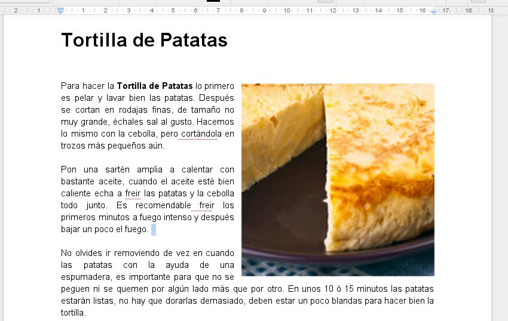

1. Introducción

En la práctica de hoy vamos a repasar algunos de los diferentes conceptos de búsqueda de información, gestión de archivos, edición de documentos, trabajo con el correo electrónico, o trabajo en la nube que hemos estado viendo a lo largo del curso.
2. Búsqueda de información

Me han recomandado la lectura de un título de literatura narrativa titulado La sombra del viento, pero no recuerdo quién lo escribió. ¿Podrías buscar el título del autor, otras obras similares, y una tienda de internet donde se venda para saber su precio aproximado? Envíame un correo con la información que encuentres.
3. Vídeo
Estoy buscando el vídeo de la canción Love me Do del grupo The Beatles. ¿Sabrías dónde ir a buscarlo y encontrar la canción? (Youtube...)
4. Envío de adjuntos
Os voy a enviar un correo a todos con una fotografía de un sitio donde me gustaría viajar. ¿Podéis responder al correo, que lo reciba toda la clase, con otra fotografía de un sitio donde hayáis estado u os gustaría estar?
5. Crear un documento con una receta
Finalmente si os sobra tiempo, ¿podríais crear un documento (con Word, OpenOffice o Google Docs) con una receta de cocina que merezca la pena probar? Envíamela por correo o compártela con Google Drive.
4. Gracias por asistir al curso
Quería agradeceros la asistencia y dedicación que habéis tenido con el curso, ¡ha sido un placer compartir este tiempo con vosotros! Nos vemos otro año.